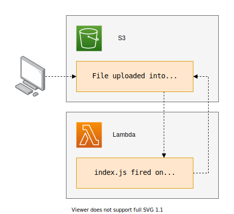

Terraform + S3 + S3 Event Notification + Lambda
Troposphere is a good tool to simplify your life when you create CloudFormation templates. But Terraform is a much more advanced Infrastructure as code management tool. We will create a small project to test this software.
The goal : when you upload a file to an S3 bucket, the default permissions declare that file private. We will create an S3 event notification and associate it with a Lambda function to define this file as public. :

Install Terraform
Download the latest binary then install it :
# extract and install
$ sudo unzip -o terraform_0.xx.xx_linux_amd64.zip -d /usr/local/bin
# installed with success
$ terraform -version
Terraform v0.xx.xx
Create a first test
To create an S3 bucket we need to :
- Declare the aws provider
- Create a bucket with the aws_s3_bucket resource
- Use the random_id resource to have a unique bucket name
Let’s create a test.tf file :
provider "aws" {
region = "eu-west-3"
}
resource "random_id" "random" {
byte_length = 3
}
resource "aws_s3_bucket" "bucket" {
bucket = "my-bucket-${random_id.random.hex}"
acl = "private"
force_destroy = true
}
output "bucket" {
value = "${aws_s3_bucket.bucket.id}"
}
We can now initialize our terraform project with the init command :
# download the plugins
$ terraform init
# the `.terraform` directory is created
$ tree -a
.
├── test.tf
└── .terraform
└── plugins
└── linux_amd64
├── lock.json
├── terraform-provider-aws_v2.46.0_x4
└── terraform-provider-random_v2.2.1_x4
3 directories, 5 files
Now we can :
- Validate the configuration files
- Create an execution plan to preview what will be created
- Apply the changes
# validate the config
$ terraform validate
Success! The configuration is valid.
# generate modification plan
$ terraform plan -out=tfplan
# the generated `tfplan` file is a zip
$ unzip -l tfplan
Archive: tfplan
Length Date Time Name
--------- ---------- ----- ----
795 2000-01-01 09:00 tfplan
121 2000-01-01 09:00 tfstate
284 2000-01-01 09:00 tfconfig/m-/test.tf
41 2000-01-01 09:00 tfconfig/modules.json
--------- -------
1241 4 files
# apply the plan. The bucket `my-bucket-e8cd2b` is created
$ terraform apply -auto-approve tfplan
Apply complete! Resources: 2 added, 0 changed, 0 destroyed.
Outputs:
bucket = my-bucket-e8cd2b
Let’s upload a test file :
# we can see the created bucket
$ aws s3api list-buckets \
--region eu-west-3 \
--query 'Buckets[].[Name]' \
--output text
my-bucket-e8cd2b
# upload a file
$ aws s3 cp jellyfish.jpg s3://my-bucket-e8cd2b
upload: ./jellyfish.jpg to s3://my-bucket-e8cd2b/jellyfish.jpg
If we try to download the file, we get an error because the file is private :
# we try to get the file
$ curl https://my-bucket-e8cd2b.s3.eu-west-3.amazonaws.com/jellyfish.jpg
<?xml version="1.0" encoding="UTF-8"?>
<Error>
<Code>AccessDenied</Code>
<Message>Access Denied</Message>
<RequestId>3650F958..</RequestId>
<HostId>tQgPxokB+oxkSrQRyy29t+DTtt/z1tHrzOcQDN...</HostId>
</Error>
This test is over, we can destroy our resources :
# destroy the resources
$ terraform destroy -auto-approve
Destroy complete! Resources: 2 destroyed.
Install and explore the project
Get the code from this github repository :
# download the code
$ git clone \
--depth 1 \
https://github.com/jeromedecoster/aws-terraform-s3-notification-lambda.git \
/tmp/aws
# cd
$ cd /tmp/aws
We have a simple config.tf file :
provider "aws" {
region = "eu-west-3"
}
resource "random_id" "random" {
byte_length = 3
}
The s3.tf file is now more complex :
- We use the aws_s3_bucket_notification to configure the S3 event notification. This target a Lambda function declared in another file.
- We must declare the aws_lambda_permission to allow the Lambda function to access this bucket.
resource "aws_s3_bucket" "bucket" {
bucket = "my-bucket-${random_id.random.hex}"
acl = "private"
force_destroy = true
}
resource "aws_s3_bucket_notification" "bucket_notification" {
bucket = aws_s3_bucket.bucket.id
lambda_function {
lambda_function_arn = aws_lambda_function.lambda_function.arn
events = ["s3:ObjectCreated:*"]
}
}
resource "aws_lambda_permission" "lambda_permission" {
statement_id = "AllowExecutionFromS3Bucket"
action = "lambda:InvokeFunction"
function_name = aws_lambda_function.lambda_function.arn
principal = "s3.amazonaws.com"
source_arn = aws_s3_bucket.bucket.arn
}
The lambda.tf file :
- We use the archive_file provider to generate a zip file from the index.js.
- We create the Lambda function with aws_lambda_function.
data "archive_file" "zip" {
type = "zip"
source_file = "./index.js"
output_path = "index.zip"
}
resource "aws_lambda_function" "lambda_function" {
filename = data.archive_file.zip.output_path
source_code_hash = filebase64sha256(data.archive_file.zip.output_path)
function_name = "lambda-${random_id.random.hex}"
role = aws_iam_role.lambda_role.arn
handler = "index.handler"
runtime = "nodejs12.x"
}
The Lambda function is used to modify the object Access Control List (ACL) :
exports.handler = (event) => {
let data = event.Records[0].s3
let param = {
Bucket: data.bucket.name,
Key: data.object.key,
ACL: 'public-read',
}
s3.putObjectAcl(param, (err, data) => {
if (err) console.log('err:', err)
else console.log('data:', data)
})
}
And the iam.tf file :
- We use the aws_iam_role resource the create le Lambda function trusted policy role.
- We use the aws_iam_policy to declare the authorized actions of the lambda function.
- Don’t forget to attach the policy to the role with aws_iam_role_policy_attachment.
resource "aws_iam_role" "lambda_role" {
name = "lambda-role-${random_id.random.hex}"
assume_role_policy = file("./lambda-assume-role-policy.json")
}
resource "aws_iam_policy" "lambda_policy" {
name = "lambda-policy-${random_id.random.hex}"
policy = file("./lambda-policy.json")
}
resource "aws_iam_role_policy_attachment" "lambda_role_attached_policy" {
role = aws_iam_role.lambda_role.name
policy_arn = aws_iam_policy.lambda_policy.arn
}
Now we can deploy the project :
# download the plugins
$ terraform init
# validate the config
$ terraform validate
Success! The configuration is valid.
# generate modification plan
$ terraform plan -out=tfplan
# deploy the plan
$ terraform apply -auto-approve tfplan
Apply complete! Resources: 8 added, 0 changed, 0 destroyed.
Outputs:
bucket = my-bucket-3623ca
lambda = lambda-3623ca
lambda_policy = lambda-policy-3623ca
lambda_role = lambda-role-3623ca
Let’s upload a test file :
# upload a file
$ aws s3 cp jellyfish.jpg s3://my-bucket-3623ca
upload: ./jellyfish.jpg to s3://my-bucket-3623ca/jellyfish.jpg
Let’s play with this file :
- The file is public : we receive an
HTTP 200response. - So we can download it.
# just get the headers
$ curl --head https://my-bucket-3623ca.s3.eu-west-3.amazonaws.com/jellyfish.jpg
HTTP/1.1 200 OK
x-amz-id-2: TEOcoZpMCkucNT84JcLMGMn1dOOXCY0lu...bdyBpso=
x-amz-request-id: F9E2E2760
Date: Tue, 01 Jan 2000 10:00:00 GMT
Last-Modified: Tue, 01 Jan 2000 10:00:00 GMT
ETag: "9a6624c456c6ea1"
Accept-Ranges: bytes
Content-Type: image/jpeg
Content-Length: 26436
Server: AmazonS3
# download the file
$ curl https://my-bucket-3623ca.s3.eu-west-3.amazonaws.com/jellyfish.jpg \
--silent \
--output downloaded.jpg
We can see our beautiful photo of jellyfish :